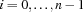
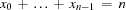
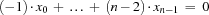

7.4 Exercises
Exercise 7.1 (See solution)
Magic Sequence
A magic sequence of length
is a sequence
of integers such that for every 
is an integer between 0 and
.
the number
occurs exactly
Write a parameterized script that, given
The script should use the procedure
{FD.exactlyKSI}that creates a propagator for the constraint saying that exactly K fields of the record S are equal to the integer I.
You can drastically reduce the search space of the script by having propagators for the redundant constraints

and

Explain why these constraints are redundant.